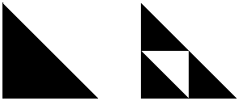
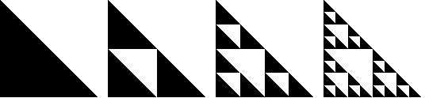

A way to generate the gasket is to start with a closed and bounded figure, such as a filled-in isosceles right triangle, and then to perform a sequence of scalings, reflections, rotations, and translations on the figure.
For the gasket, all we need are scalings and translations.
Scale the large triangle by 1/2 in both directions, make three copies of this smaller triangle. Then translate one copy over and one copy up, obtaining the configuration on the right.
|  |
A filled-in isosceles right triangle with three copies of itself scaled by one-half and translated
If we suppose the original triangle has base and altitude 1 and its lower left vertex is the origin, then the transformations become
We began by applying these three transformations to the triangle, obtaining three smaller triangles. Now apply the three transformations to these three triangles, obtaining nine still smaller triangles, and so on.
In principle, we continue this process forever. In practice after a few iterations the changes are smaller than pixels on the computer screen, so we stop.
|  |
The first three stages of constructing a Sierpinski gasket from a right isosceles triangle
Continuing this process forever, these shapes converge to a gasket.
Note that applying these three transformations to the gasket leaves the gasket unchanged. The gasket is the only (bounded) shape for which this is true. In that sense, these three transformations determine the gasket.